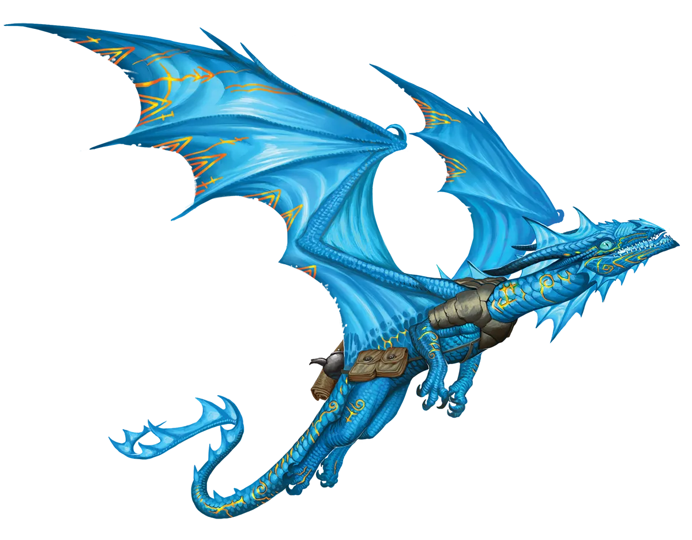
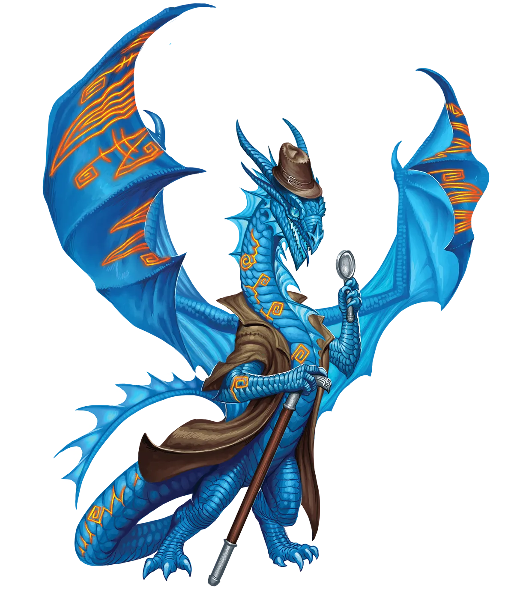

终极工具人
蔚蓝龙类对冒险有着与生俱来的渴望，他们总会忍不住探索任何引起他们兴趣的东西。任何线索在他们口中的撕咬，都使他们成为操纵者完美的工具人。只要在他们面前晃动一条线索，就能看着他们顺着线索追下去。
蔚蓝龙 Cerulean Dragon |
|
|
即便是传统主义的蔚蓝龙类也热爱旅行、冒险和探索各种奇异地点的奇观，甚至愿意为此放弃巢穴，以便更轻松地四处游历。这种生活方式是所有龙类中与永恒仪式最明显的契合点之一，因此许多蔚蓝龙类都参与了这项仪式。如果他们打算为了乐趣而进行各种疯狂危险的冒险，那么他们不妨让魔法成长并从中学习，以便在旅途中增强自身的力量。对于四处游荡的蔚蓝龙类来说，冒险和力量提升的节奏如此自然，以至于他们几乎不会在意初行仪式时所失去的部分力量。然而，一些保持传统的蔚蓝龙类，往往有着充分的理由这样做。有些传统派出于爱或友谊而留下，他们找到了同样是传统主义龙类的挚友或终生伴侣，希望以相同的节奏共同生活与成长。另一些则是拖延仪式太久，以至于觉得不再值得进行，或者不知何故在仪式中失败且无法重试，又或者他们已经古老到在仪式知识尚不普及的时代就存在了。但这也并非说，传统主义蔚蓝龙类必须有理由。有些成为传统派并无特殊原因，这只是默认的现状，只要不采取行动或漠不关心便能维持。永恒派与传统主义的蔚蓝龙类往往相处得非常好，有时其他种族甚至在与蔚蓝龙类交谈之后，也难以分辨他们之间的区别。要得出正确的结论，需要技能和对仪式所产生差异的知识，并结合对龙类年龄与其实力相比的审慎评估。 永恒蔚蓝龙类只是一如既往地做他们最擅长的事情：以极快的速度探索和冒险。他们经常加入冒险队伍，只要这些队伍确定会探索新的地方，而不是过分迷恋于某一个特定地点。对于永恒蔚蓝龙类来说，结识新的冒险者并不像发现新地点那样令人兴奋，但这一过程依然是激动人心的。因此，永恒蔚蓝龙类可能愿意加入一个固定的队伍，共同度过短暂时光。这使他们可以在一个队伍一个队伍之间转换，直到找到完美的契合团队――一个分享他们流浪渴望的队伍，或者至少通过频繁旅行来迎合他们的队伍。永恒蔚蓝龙类喜欢那些能让他们的冒险和旅程感觉快节奏且刺激的职业。武僧、游荡者和其他灵活机动的职业是他们的最爱，同时他们也喜欢游侠和其他擅长探索的职业。 终极工具人 蔚蓝龙类对冒险有着与生俱来的渴望，他们总会忍不住探索任何引起他们兴趣的东西。任何线索在他们口中的撕咬，都使他们成为操纵者完美的工具人。只要在他们面前晃动一条线索，就能看着他们顺着线索追下去。 蔚蓝龙特质 Cerulean Dragon Traits 你出身于一脉酷爱远行探索与冒险的蔚蓝龙世系。 |
  |